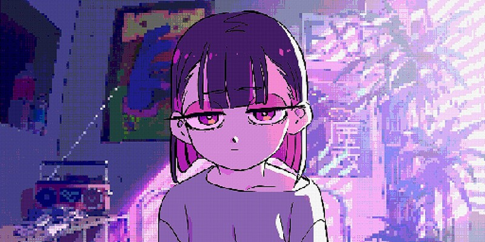
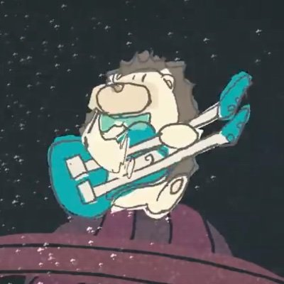
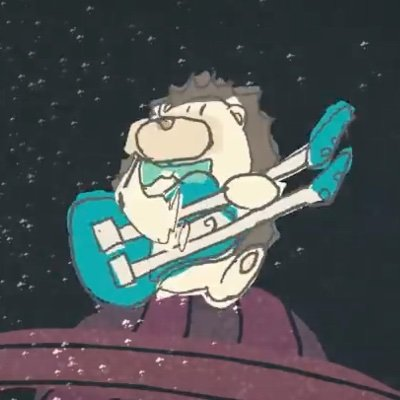
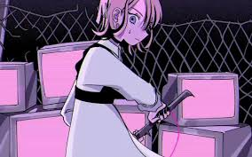

ずっと真夜中でいいのに。

TOP

TOP

ずっと真夜中でいいのに。とは

なぜ「しゃもじ」を振るのか。
ACAね は  what is zutomayo で次のように語っている。
what is zutomayo で次のように語っている。
しゃもじは「生きてく中でどうにも立ち直れないような日があったり悲しかったり辛かったりしても、日々ご飯をよそっていかねばならない、生きてくために必要な楽器」である。
主要キャラクター
-
- にらちゃん
- 
-
ずっと真夜中で良いのに。のMVに登場する女の子の主人公である。
楽曲の世界観の中で、物語を繰り広げる。
楽曲毎に容姿や服装が異なり、武器を持つシーンが多い。
日々何かと戦うこの世界を表しているのだろうか。。。
-
- うにぐりくん
-
ハリネズミがモチーフである。
かわいい見た目から運営、ずとまろの両方から愛されている。
ライブ会場に時々出現し、うにぐりくんを一目見ようと、
開演の数時間前から張り込むずとまろも少なくない。